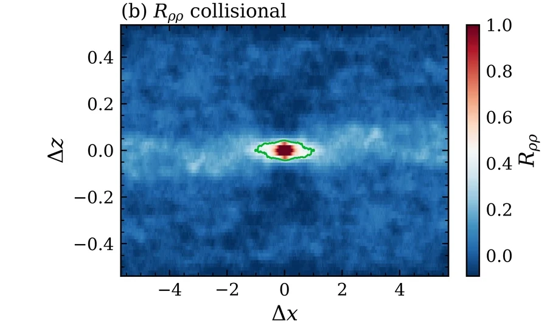
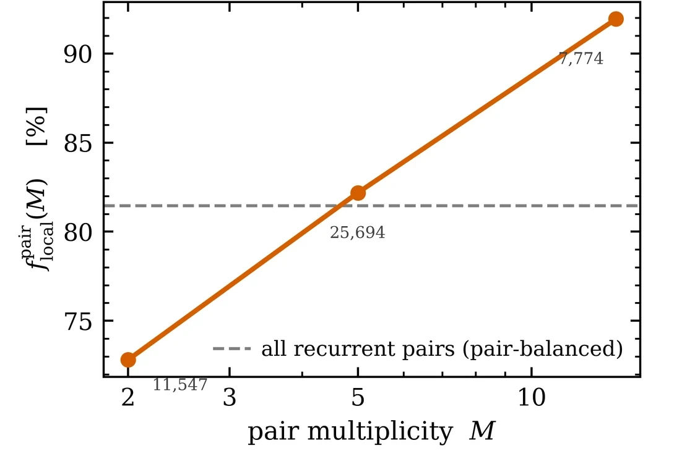

Mathematical modelling of particle-laden flows
From particle interactions to collective transport.
I investigate how carrier-flow structure, particle inertia and interparticle collisions influence the spatial organisation and transport of dispersed particles. My research combines numerical particle-dynamics simulations with Lagrangian statistics and Eulerian flow-field and particle-density diagnostics to connect individual interactions with collective behaviour.
Joint European MSc MathMods (Mathematical Modelling in Engineering) · 2026
Research internship · Inria Sophia Antipolis, Team CALISTO · April–September 2026
Applying for PhD positions in particle transport and multiscale modelling
Particle interactions in a carrier flow
- Carrier flow
- Lower-inertia particle
- Higher-inertia particle
- Contact
A carrier flow organises particle paths. Lower-inertia particles follow it; higher-inertia particles lag and cross it.
Conceptual illustration, not thesis simulation data. Streamlines and particle trajectories are stylised; orange highlights represent schematic particle encounters.
Research focus
Which particle-scale mechanisms matter for collective transport, and how should a model represent them?
Particle dynamics
Development and verification of numerical solvers for inertial particles with hard-particle collisions.
Flow–particle interactions
Particle transport, preferential sampling and redistribution in prescribed and turbulence-derived carrier flows.
Collective statistics
Clustering, spatial correlations and collision-conditioned diagnostics with statistical uncertainty assessment.
Master’s thesis, 2026
Collective Dynamics of Colliding Inertial Particles in Prescribed Carrier Flows
My MSc thesis investigates how elastic collisions modify the collective organisation of inertial particles in prescribed carrier flows. Using verified particle-dynamics solvers and matched collision-on and collision-off simulations, I examine clustering, spatial correlations and collision-conditioned dynamics in controlled shear and reduced near-wall turbulence configurations.
Carried out with Team CALISTO at Inria Sophia Antipolis, supervised by Christophe Henry and Laetitia Giraldi, in an internship selected and funded through Inria’s 2026 Machine Learning + Simulation thematic semester.

What the thesis found
-

One collision law, two opposite outcomes
In the tested high-inertia regime, elastic collisions erase the clustering of the collisionless population; in the tested low-inertia regime, the same collision law creates banded clustering where the population was nearly uniform. No collisional dissipation is needed; the outcome is set by competing particle, collision and transport timescales.
Shown: the low-inertia regime, collisions off and on. See in the thesis · Download figure
-

Near the wall, collisions reorganise a structure they did not create
The carrier streaks establish the preferred streamwise orientation of both populations. Collisions do not create it; they modify the particle statistics, weakening short-range pair alignment, damping local number fluctuations and lengthening the streamwise coherence of the density field.
Shown: density autocorrelation, collisions on. See in the thesis · Download figure
-

Elastic rebound, then local return
After contact, 87.9% of repeat-contact intervals show no separation beyond two particle diameters in the saved states, which have finite temporal resolution. The share rises from about 73% for pairs that collide twice to about 92% for pairs that collide ten times or more.
Shown: local-recurrence fraction against pair multiplicity. See in the thesis · Download figure


How it was done
- An event-driven hard-disk solver (force-free reference) and a kick–drift solver coupling Stokes relaxation to chronologically resolved contacts.
- Verification against analytical single-particle solutions, cross-solver checks, conservation diagnostics and timestep refinement.
- Matched collision-on and collision-off runs from the same particle state in the same carrier-flow record.
- Box-occupancy, pair-orientation, density-autocorrelation and collision-conditioned statistics with bootstrap uncertainty and resolution checks.
The near-wall results hold for a two-dimensional, one-way-coupled hard-disk model on a wall-parallel plane, at one inertia (τp+ ≈ 8), one particle size and one concentration.
Updates
Graduated: Joint European MSc MathMods (Mathematical Modelling in Engineering).
Thesis submitted: Collective Dynamics of Colliding Inertial Particles in Prescribed Carrier Flows.
Started a six-month research internship with Team CALISTO, Inria Sophia Antipolis.
Background
Numerical analysis and continuum mechanics, with probability, stochastic calculus and statistical learning.
- 2024–2026
Joint European MSc MathMods
Mathematical Modelling in Engineering: Theory, Numerics, Applications. University of L’Aquila, University of Hamburg and Université Côte d’Azur. Course projects included an adaptive micro–macro traffic simulation coupling the Cell Transmission Model with the Intelligent Driver Model (Hamburg, 2025) and hyperparameter optimisation with approximate gradients, implementing HOAG through implicit differentiation (Côte d’Azur, 2026).
- 2022–2024
Associate Analyst, Deloitte
Bengaluru. Automated regression testing for ERP data workflows, with a focus on reliability and validation.
- 2019–2022
BSc in Economics, Mathematics and Statistics
CHRIST (Deemed to be University), Bengaluru.
Documents
- PDF, 25.9 MB
Master’s thesis
Methods, results, interpretation and validation appendices
- PDF, 15.7 MB
Thesis defence slides
The presentation and its selected results
- PDF, 0.2 MB
Curriculum vitae
Research experience, education and projects
A first-author manuscript with Christophe Henry and Laetitia Giraldi, based on the thesis, is in preparation.
Contact
I am looking for a PhD position in particle transport, computational fluid dynamics or multiscale modelling. Write to me about research fit, or about anything on this page.
johaantk2001@gmail.com